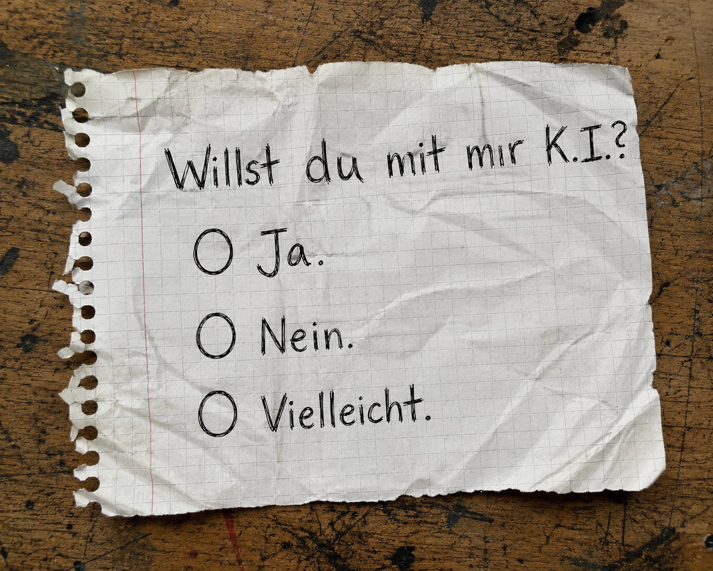

Kolumne
Das Problem ist nicht die Maschine
Über KI, Punk, Werkzeuge, Konzerne und die Frage, wer am Ende eigentlich die Hand am Schalter hat.
Kolumne anhören
Burg liest vor. Für alle, die gerade lieber hören als scrollen.

In den letzten Wochen lese ich immer häufiger denselben Satz.
„KI ist Scheiße.“
Punkt.
Diskussion beendet.
Ganz ehrlich?
So einfach ist mir das zu billig.
Versteht mich nicht falsch.
Ich kann diese Wut verstehen.
Sogar ziemlich gut.
Die Wut ist nicht falsch
Wenn Künstler plötzlich feststellen, dass ihre Bilder, Texte, Musik oder Stimmen irgendwo in Datensätzen landen, ohne dass sie jemals gefragt wurden, dann ist das ein Problem.
Wenn Unternehmen KI benutzen, um Menschen zu entlassen, Löhne zu drücken oder kreative Arbeit möglichst billig zu ersetzen, dann ist das ebenfalls ein Problem.
Und wenn aus Kultur einfach nur noch beliebiger Content wird, der hauptsächlich dafür da ist, Klicks zu erzeugen und Werbeflächen zu füllen, dann ist daran überhaupt nichts punk.
Das ist kein technischer Fortschritt.
Das ist Kapitalismus mit besserem Grafikchip.
Trotzdem frage ich mich, ob wir manchmal das falsche Ziel beschimpfen.
Vielleicht ist KI gar nicht das eigentliche Problem.
Vielleicht verwechseln wir das Werkzeug mit demjenigen, der es in der Hand hält.
Werkzeug bleibt Werkzeug
Irgendwann kam mir ein Gedanke.
Eine KI zu bedienen unterscheidet sich gar nicht so sehr davon, ein Instrument zu lernen.
Kauf dir eine teure Gitarre.
Stell sie jemandem in die Hand, der noch nie gespielt hat.
Das Ergebnis wird wahrscheinlich ziemlich scheiße.
Gib dieselbe Gitarre einem guten Musiker.
Plötzlich entstehen Songs.
Nicht weil die Gitarre kreativ geworden ist.
Sondern weil jemand wusste, was er damit sagen wollte.
Mit KI ist das oft ganz ähnlich.
Ein guter Prompt ist für mich wie ein sauber gegriffener Akkord.
Das Werkzeug ersetzt weder Talent noch Haltung.
Und schlechte Ideen bleiben auch mit der modernsten Technik schlechte Ideen.
Genau deshalb kann ich mit Aussagen wie „Alles mit KI ist Scheiße“ genauso wenig anfangen wie mit „KI wird alle Probleme lösen“.
Beides sind Parolen.
Und von Parolen hatten wir in der Geschichte schon mehr als genug.
Die Strukturen dahinter
Was mich an KI wirklich beschäftigt, ist nämlich etwas völlig anderes.
Nicht ChatGPT.
Nicht Suno.
Nicht Midjourney.
Sondern die Strukturen dahinter.
Wer besitzt diese Werkzeuge?
Wer entscheidet, was sie dürfen?
Wer sammelt die Daten?
Wer verdient das Geld?
Wer schreibt die Regeln?
Und wer hat irgendwann einfach keine Wahl mehr, weil plötzlich alles über genau diese Plattformen läuft?
Das ist der Moment, an dem bei mir alle Alarmglocken angehen.
Denn genau so entstehen Abhängigkeiten.
Erst kommt das Werkzeug.
Dann kommt die Plattform.
Dann brauchst du einen Account.
Dann ein Abo.
Dann werden Funktionen gestrichen.
Dann steigen die Preise.
Und irgendwann merkst du:
Das Werkzeug gehört dir gar nicht.
Du darfst es nur benutzen.
Solange jemand anderes das erlaubt.
Und genau da werde ich misstrauisch.
Nicht gegenüber der Maschine.
Sondern gegenüber den Menschen, die daraus ein Geschäftsmodell bauen.
Die anarchistische Frage
Punk hatte für mich nie Angst vor neuen Werkzeugen.
Punk hatte immer ein Problem mit Macht.
Mit Hierarchien.
Mit Konzernen.
Mit Menschen, die bestimmen wollen, wie andere zu leben haben.
Eine anarchistische Frage lautet deshalb für mich nicht:
„Darf es KI geben?“
Sondern:
Wem gehört sie?
Wer kontrolliert sie?
Wer wird dadurch abhängig?
Und wem nützt das alles am Ende?
Denn genau das passiert ständig.
Nicht nur bei KI.
Bei sozialen Netzwerken.
Beim Streaming.
Bei Suchmaschinen.
Bei Smartphones.
Und wahrscheinlich morgen schon wieder beim nächsten großen Ding.
DIY heißt nicht Nostalgie
Deshalb glaube ich auch nicht, dass die Antwort lauten kann:
„Finger weg von KI.“
DIY hat für mich nämlich nie bedeutet, alte Werkzeuge zu romantisieren.
DIY bedeutete:
Nimm das, was da ist.
Mach etwas Eigenes daraus.
Warte nicht darauf, dass dir jemand die Erlaubnis gibt.
Vielleicht ist es sogar ziemlich punkig, sich genau diese Werkzeuge anzueignen.
Sie zu verstehen.
Sie zweckzuentfremden.
Sie gegen den Strich zu benutzen.
Für Dinge einzusetzen, die in keinem Businessplan standen.
Denn genau das hat Punk schon immer gemacht.
Vorhandene Werkzeuge nehmen.
Sie auseinanderbauen.
Sie anders benutzen.
Etwas Eigenes daraus machen.
Nicht warten, bis irgendjemand eine Erlaubnis erteilt.
Sondern einfach loslegen.
Haltung kommt nicht aus der Maschine
Eine KI hat übrigens keine Haltung.
Sie kennt keine Wut.
Kein Mitgefühl.
Keine Solidarität.
Keine Ideale.
Keine Hoffnung.
Sie kennt Wahrscheinlichkeiten.
Mehr nicht.
Haltung entsteht erst dort, wo ein Mensch entscheidet, wofür er ein Werkzeug benutzt.
Ein Hammer entscheidet nicht, ob ein Haus gebaut oder eine Scheibe eingeschlagen wird.
Eine KI entscheidet das genauso wenig.
Wenn am Ende nur glatter, austauschbarer Einheitsbrei entsteht, liegt das nicht daran, dass eine Maschine zu wenig Punk verstanden hat.
Dann hatte vermutlich vorher schon keiner etwas zu sagen.
Freiheit oder Kontrolle?
Vielleicht sollten wir deshalb aufhören zu fragen:
„Ist KI gut oder schlecht?“
Die spannendere Frage lautet doch:
Macht sie Menschen freier?
Oder macht sie sie abhängiger?
Denn genau dort beginnt für mich die eigentliche Diskussion.
Nicht zwischen Mensch und Maschine.
Sondern zwischen Freiheit und Kontrolle.
Und falls Punk mir in den letzten Jahrzehnten überhaupt etwas beigebracht hat, dann das:
Werkzeuge waren nie das Problem.
Die Frage war immer, wer sie besitzt.
Prost.